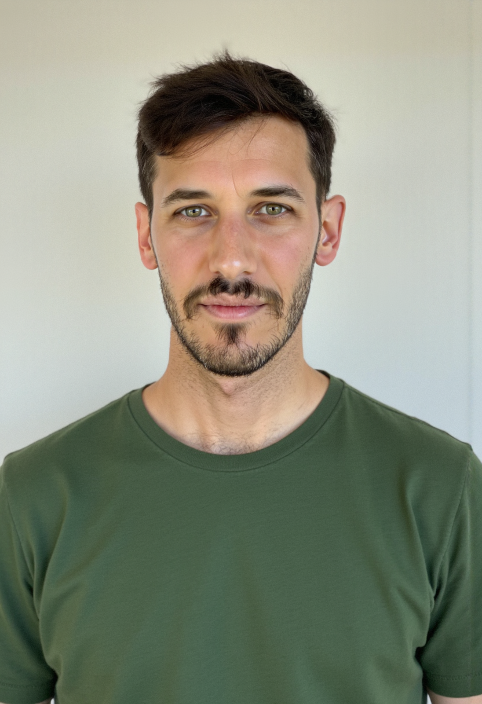

Hey, I'm Sebastian 👋
I'm an engineering manager passionate about building great startup teams that own and deliver impactful technology and do a lot with little.
I also enjoy understanding and, if possible, experiencing the cultural differences in the world.
I'm currently based in Salt Lake City 🇺🇸 but I've been lucky to also have lived London 🇬🇧 and Buenos Aires 🇦🇷
Guiding principles
Over my, now, multiple years of experience I've found the following principles to be very useful to have top of mind for navigating life and work. Would any of these principles change in an AI-first world? I don't think so, but we'll see.
-
Life is one long game.
Also know as the power of compounding. Focus on getting better 1% everyday, is much better in the long run. We all want to be successful and rich today, but being patient leads to more sustainable and longer term happiness. Warren Buffet famously said “we all know how to get rich, but is not sexy”. There is a phrase, thought to be said by Spanish painter Pablo Picasso, that says “ensure luck finds you working”. This to me means that eventually, if you try enough times, you will get lucky and get what you want. This applies to so many things, including investing.
-
Seek first to understand, then to be understood.
This comes from the book the 7th Habits, but, there are many different ways to express it, like “lead with inquiry” or “shut up and listen”. If our first reaction to something that we don’t agree with would always be a question, the world would be a much better place.
-
Embrace discomfort.
I once read that a person success and happiness can be measured in the number of uncomfortable conversations they are willing to have. If you do things worth doing, some failure is just part of the process. Far easier said than practiced, but still true.
-
People and trust first.
I believe most problems at our workplace are people problems. I believe relationships are the fuel of our life and essential to our success. I believe that you need people for a successful business and you need successful businesses for people to thrive, they fuel each other and are not contradictory.
Standing on the shoulder of giants
We are all based what we produce on countless other very smart people that have come before us and are around us. These are some resources that have deeply influenced how I think. I hope I will find many more of them in the future.
- Coaching: This is not a specific resource, but more a commonality that I've seen accross many successful people I've met. Having a coach that you connect with can be a transformative experience for growth and introspection, worth every penny.
- The courage to be disliked (Book)
- Online Tech Communities: Specially when you work in small startups its important to have a way to connect with other people in the industry. I particularly recommend the Rands Leadership Slack and Refactoring. Remember always that you always get what you give.
This minimalistic personal website was inspired on this blog post and the design is based on the Dead Simple Sites collection.